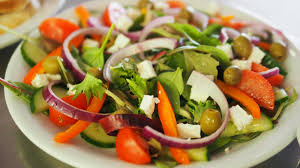

Salad

Description
Salad is a fresh and healthy dish
that typically consists of a mixture of raw or cooked vegetables,
fruits, nuts, seeds, and sometimes protein like chicken, fish, or tofu.
It's often dressed with a flavorful vinaigrette or creamy dressing,
making it a versatile and delicious option for a light meal or side dish.
Ingredients
- 4 cups mixed greens (lettuce, spinach, arugula)
- 1 cup cherry tomatoes, halved
- 1 cucumber, sliced
- 1/4 cup red onion, thinly sliced
- 1/4 cup feta cheese, crumbled
- 1/4 cup olives (optional)
- 1/4 cup toasted nuts (walnuts, almonds)
- 1/4 cup balsamic vinaigrette dressing
Steps
- In a large salad bowl, combine mixed greens, cherry tomatoes, cucumber slices, and red onion.
- Add crumbled feta cheese and olives (if using) on top of the salad.
- Sprinkle toasted nuts over the salad for added crunch.
- Drizzle balsamic vinaigrette dressing over the salad and toss gently to combine all ingredients.
- Serve immediately as a light meal or side dish.
home